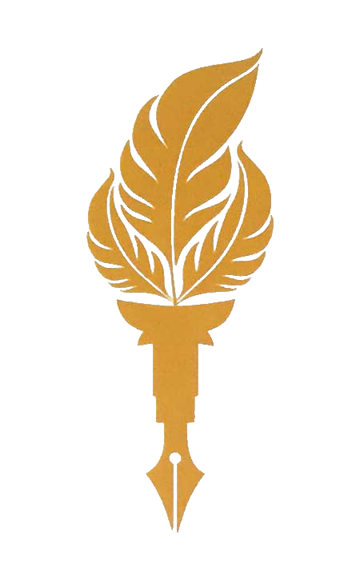

About Me!
I am a Machine Learning Scientist and Ph.D. Candidate at the University of Amsterdam (graduating April 2027), specializing in Natural Language Processing (NLP) and Information Retrieval (IR). My research covers key aspects of agentic conversational search systems, including retrieval, LLM-based evaluation, personalization, synthetic data generation, and user simulation. I have published over 10 papers in these areas, alongside a proven track record of building production-scale NLP pipelines for Booking.com and the European Patent Office (EPO) at Leiden University. Additionally, as a co-organizer of the TREC iKAT track, I have helped publish reusable benchmarks, evaluation methodologies, and tools for information-seeking systems.
My curriculum vitae is available here.
News
[2026-April]: Co-organizing the iKAT shared task.
[2026-April]: Two Papers Accepted at SIGIR 2026.
[2025-August]: Started my internship as Machine Learning Scientist at Booking.com.
[2025-July]: Presented my research at Doctoral Consortium at SIGIR 2025.
[2025-July]: Presented our tutorial at SIGIR 2025.
Show More News...Education
Jan 2023 - Expected April 2027
Ph.D. Candidate in Artificial Intelligence
University of Amsterdam (UvA), Amsterdam, The Netherlands
Focus: Agentic Conversational Search and Personalization
2018 - 2021
M.Sc. in Artificial Intelligence and Robotics (Summa cum laude)
Amirkabir University of Technology, Tehran, Iran
Focus: Question Answering Systems and Deep Attentional Neural Networks
2014 - 2018
B.Sc. in Software Engineering (Summa cum laude)
Amirkabir University of Technology, Tehran, Iran
Work Experience
2025
Machine Learning Scientist Intern
Booking.com, Amsterdam, The Netherlands
Designed and deployed a domain-agnostic synthetic data generation pipeline to bootstrap ML models in zero-annotation settings. Developed style-diversity techniques to increase variance. Built scalable generation workflows using PyTorch and Hugging Face.
2022
Researcher
Leiden University (LIACS) in collaboration with the European Patent Office (EPO), Leiden, The Netherlands
Designed an end-to-end reference extraction pipeline deployed across patent corpora from EPO and USPTO. Published the full architecture and dataset establishing an enterprise-grade citation-matching standard.
Publications
1. Zahra Abbasiantaeb, Zeno Belligoli, Omar Essam, and Mohammad Aliannejadi. "The Significance of Style Diversity in Annotation-Free Synthetic Data Generation." Under review. [pdf]
2. Zahra Abbasiantaeb*, Simon Lupart*, Marcel Gohsen, Nailia Mirzakhmedova, Johannes Kiesel, Jeffrey Dalton, and Mohammad Aliannejadi. "TREC IKAT 2025: A Test Collection for the Offline and Interactive Evaluation of Conversational Search." SIGIR, 2026. [pdf]
3. Mahta Rafiee, Heydar Soudani, Zahra Abbasiantaeb, Mohammad Aliannejadi, Faegheh Hasibi, and Hamed Zamani. "Total Recall QA: A Verifiable Evaluation Suite for Deep Research Agents." SIGIR, 2026. [pdf]
4. Marcel Gohsen, Nailia Mirzakhmedova, Zahra Abbasiantaeb, Johannes Kiesel, Simon Lupart, Jeffrey Dalton, Benno Stein, and Mohammad Aliannejadi. "Sim. API: A Middleware to Simplify the Use of User Simulators for Shared Tasks in Conversational Search." Under review, 2026. [pdf]
5. Zahra Abbasiantaeb, Simon Lupart, and Mohammad Aliannejadi. "Generating Multi-Aspect Queries for Conversational Search." EACL, 2026. [pdf]
6. Zahra Abbasiantaeb*, Simon Lupart*, Leif Azzopardi, Jeffrey Dalton, and Mohammad Aliannejadi. "Conversational Gold: Evaluating Personalized Conversational Search System using Gold Nuggets." SIGIR, 2025. [pdf]
7. Maryam Mousavian, Zahra Abbasiantaeb, Mohammad Aliannejadi, and Fabio Crestani. "Towards Fair Rankings: Leveraging LLMs for Gender Bias Detection and Measurement." ICTIR, 2025. [pdf]
8. Clemencia Siro*, Zahra Abbasiantaeb*, Yifei Yuan, Maarten de Rijke, and Mohammad Aliannejadi. "Do Images Clarify? A Study on the Effect of Images on Clarifying Questions in Conversational Search." CHIIR, 2025. [pdf]
9. Zahra Abbasiantaeb, Chuan Meng, Leif Azzopardi, and Mohammad Aliannejadi. "Improving the Reusability of Conversational Search Test Collections." ECIR, 2025. [pdf]
Show More Publications...Books
Tutorials & Invited Talks
[July 2025]: Tutorial on "Query Understanding in LLM-based Conversational Information Seeking" at SIGIR 2025, Padua, Italy.
[December 2025]: Invited Talk: "LLMs in Conversational Search Systems: From Query Understanding to Response Evaluation" at University of Glasgow IR Seminar, UK.
[May 2024]: Invited Talk: "User Simulation in Conversational Search" at Qazvin Islamic Azad University (QIAU), Iran.
Academic Services
[2023-2026]: Co-organizing the TREC Interactive Knowledge Assistant Track (iKAT) at TREC.
[2024-2026]: Reviewer of conferences: SIGIR, CIKM, ECIR, CLEF, ARR.
Teaching Assistance
Summer 2026
Information Retrieval 1, (M.Sc.)
Instructed at University of Amsterdam (UVA)
Sep 2024 - Nov 2024
Information Retrieval 0 (IR0), (B.Sc.)
Instructed by Dr. Mohammad Aliannejadi at University of Amsterdam (UVA)
Sep 2023 - Nov 2023
Information Retrieval 0 (IR0), (B.Sc.)
Instructed by Dr. Mohammad Aliannejadi at University of Amsterdam (UVA)
July 2021 - Sep 2021
An introduction to Natural Language Processing (NLP)
Instructed by Dr. Saeedeh Momtazi at Hamrah Academy
Sep 2019 - Feb 2020
Information Retrieval and Web Search, (M.Sc.)
Instructed by Dr. Saeedeh Momtazi at Amirkabir University of Technology (AUT)
Feb 2019 - Jul 2019
Machine Learning, (M.Sc.)
Instructed by Dr. Ehsan Nazerfard at Amirkabir University of Technology (AUT)
Feb 2018 - Jul 2018
Artificial Intelligence, (B.Sc.)
Instructed by Dr. Ahmad Nikabadi at Amirkabir University of Technology (AUT)
Sep 2016 - Feb 2017
System Design and Analysis, (B.Sc.)
Instructed by Mr. Bahman Pourvatan at Amirkabir University of Technology (AUT)
Feb 2016 - Jul 2016
Advanced Computer Programming, (B.Sc.)
Instructed by Mr. Bahman Pourvatan at Amirkabir University of Technology (AUT)
Sep 2015 - Feb 2016
Principals Of Computer And Programming, (B.Sc.)
Instructed by Mr. Bahman Pourvatan at Amirkabir University of Technology (AUT)

Honors and Awards
Nov 2024 - Maryland, USA
Ranked 1st in TREC iKAT 2024 competition.
Aug 2024 - Amsterdam, The Netherlands
Nominated for Apple Scholars PhD fellowship in Al/ML.
Feb 2024 - Merida, Mexico
Received SIGIR student travel grant from ACM.
Nov 2023 - Maryland, USA
Ranked 1st in TREC iKAT 2023 competition.
July 2022 - Madrid, Spain
Received SIGIR Registration Grant from WIR (Woman In the IR)
Jan 2020 - Passau, Germany
Invited to Exchange Program, the University of Passau invited me to study the summer semester of the academic year of 2019/20 as an exchange student.
2020 - Tehran, Iran
Ranked 1 based on GPA among all of the students in Artificial Intelligence, Amirkabir University of Technology.
2017 - Tehran, Iran
Offered direct admission to graduate school, Artificial Intelligence Amirkabir University of Technology.
2014 - Iran
Ranked 212 in the National University Entrance Exam among more than 70,000 students in mathematics and Physics, Iran.
2018 - Tehran, Iran
Ranked 5 based on GPA among all of the students in Software Engineering, Amirkabir University of Technology.
Contact Me!
Address:
Lab42
Science Park 900
1098 XH Amsterdam
Email:
zahraabbasiyantaeb[at]gmail[dot]com
z.abbasiantaeb[at]uva[dot]nl